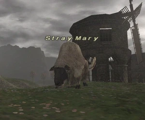
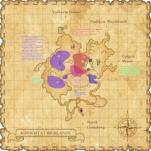

Level 75 reference · Zenith rules
|
Job: Notorious Monster |
 |

|
Zone |
Level |
Drops |
Steal |
Spawns |
Notes | ||||||
|
19-20 |
1 |
| |||||||||
|
HP = Detects Low HP; M = Detects Magic; Sc = Follows by Scent; T(S) = True-sight; T(H) = True-hearing JA = Detects job abilities; WS = Detects weaponskills; Z(D) = Asleep in Daytime; Z(N) = Asleep at Nighttime | |||||||||||


Notes:
- Located around F-6/7/8 and G-6/7/8, but she is known to stray even further than this.
- Lottery pop of Mad Sheep, possibly 3 hour wait between spawns, but spawn time seems somewhat random.
- Killable solo as early as level 19-20, depending on job/subjob.
- Grants the party/person who kills her the title "Mary's Guide".
- See testimonials.
- Below are how the PH's will appear on Wide Scan - Left for North (F-6) - Right for South (F-9)

Adapted from Eden Wiki: Stray Mary · Contributors and history · CC BY-SA 4.0. Revision 46889. Layout, links and optional background text adapted for Zenith.